🗝️ Ключевые предметы
 Большая расширяющаяся сумкаРедкий
Большая расширяющаяся сумкаРедкий
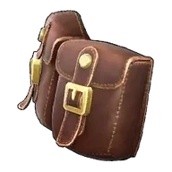
Большая расширяющаяся сумка
Большая сумка, позволяющая переносить дополнительный груз. При наличии в инвентаре увеличивает количество ячеек. Одной такой сумки вполне достаточно.
 Большой мешочек с кормомРедкий
Большой мешочек с кормомРедкий
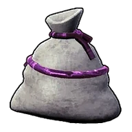
Большой мешочек с кормом
Большой мешочек для хранения еды. Разблокирует три ячейки для автоматического приема пищи. При голоде еда из этих ячеек расходуется автоматически. Одного такого мешочка вполне достаточно.
 Гигантский мешочек с кормомЛегендарный
Гигантский мешочек с кормомЛегендарный
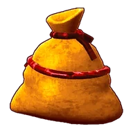
Гигантский мешочек с кормом
Гигантский мешочек для хранения еды. Разблокирует пять ячеек для автоматического приема пищи. При голоде еда из этих ячеек расходуется автоматически. Одного такого мешочка вполне достаточно.
Гранатомёт МоссандаНеобычный
Гранатомёт Моссанда
Если находится в инвентаре, позволяет оседлать пала «Моссанда» и вести непрерывный огонь из гранатомёта.
Гранатомёт Моссанда ЛаксаНеобычный
Гранатомёт Моссанда Лакса
Если находится в инвентаре, позволяет оседлать пала «Моссанда Лакс» и вести непрерывный огонь из гранатомёта.
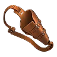
Дополнительный слот оружияЛегендарный
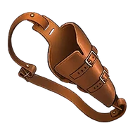
Дополнительный слот оружия
Слот, позволяющий экипировать дополнительное оружие. При наличии добавляет дополнительный слот для оружия. Одного такого слота вполне достаточно.
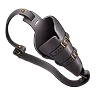
Дополнительный слот оружия 2Легендарный
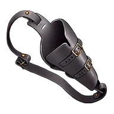
Дополнительный слот оружия 2
Слот, позволяющий экипировать дополнительное оружие. При наличии дополнительно добавляет ещё один слот для оружия. Одного такого слота вполне достаточно.
Дробовик НяфияЭпический
Дробовик Няфия
Дробовик для пала «Няфия». При активации навыка спутника Няфия обстреливает ближайших врагов из дробовика.
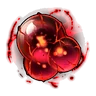
Заражённое ядро модифицированного ПалаЛегендарный
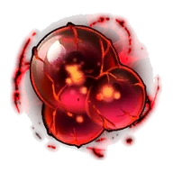
Заражённое ядро модифицированного Пала
Доказательство победы над модифицированными Палами. Один из ключей, необходимых для снятия барьера в Зале Печати, расположенном в глубинах Мирового Древа.
 Имплант: Бесконечная выносливостьЭпический
Имплант: Бесконечная выносливостьЭпический

Имплант: Бесконечная выносливость
Имплант для изменения пассивных навыков Пала. При наличии в инвентаре на Операционный стол для Палов становится доступен выбор соответствующего пассивного навыка.
 Имплант: БлагородныйЭпический
Имплант: БлагородныйЭпический

Имплант: Благородный
Имплант для изменения пассивных навыков Пала. При наличии в инвентаре на Операционный стол для Палов становится доступен выбор соответствующего пассивного навыка.
Имплант: Командир штурмаЭпический
Имплант: Командир штурма
Имплант для изменения пассивных навыков Пала. При наличии в инвентаре на Операционный стол для Палов становится доступен выбор соответствующего пассивного навыка.
Имплант: Крепкое телоЭпический
Имплант: Крепкое тело
Имплант для изменения пассивных навыков Пала. При наличии в инвентаре на Операционный стол для Палов становится доступен выбор соответствующего пассивного навыка.
Имплант: Мастер обороныЭпический
Имплант: Мастер обороны
Имплант для изменения пассивных навыков Пала. При наличии в инвентаре на Операционный стол для Палов становится доступен выбор соответствующего пассивного навыка.
 Имплант: Мастер перезарядкиЭпический
Имплант: Мастер перезарядкиЭпический

Имплант: Мастер перезарядки
Имплант для изменения пассивных навыков Пала. При наличии в инвентаре на Операционный стол для Палов становится доступен выбор соответствующего пассивного навыка.
Имплант: МастеровитыйЭпический
Имплант: Мастеровитый
Имплант для изменения пассивных навыков Пала. При наличии в инвентаре на Операционный стол для Палов становится доступен выбор соответствующего пассивного навыка.
Имплант: Мистер мускулЭпический
Имплант: Мистер мускул
Имплант для изменения пассивных навыков Пала. При наличии в инвентаре на Операционный стол для Палов становится доступен выбор соответствующего пассивного навыка.
Имплант: МотиваторЭпический
Имплант: Мотиватор
Имплант для изменения пассивных навыков Пала. При наличии в инвентаре на Операционный стол для Палов становится доступен выбор соответствующего пассивного навыка.
Имплант: Снижение усталостиЭпический
Имплант: Снижение усталости
Имплант для изменения пассивных навыков Пала. При наличии в инвентаре на Операционный стол для Палов становится доступен выбор соответствующего пассивного навыка.
 Имплант: Тренер по исцелениюЭпический
Имплант: Тренер по исцелениюЭпический

Имплант: Тренер по исцелению
Имплант для изменения пассивных навыков Пала. При наличии в инвентаре на Операционный стол для Палов становится доступен выбор соответствующего пассивного навыка.
 Имплант: Уверенно плаваетЭпический
Имплант: Уверенно плаваетЭпический

Имплант: Уверенно плавает
Имплант для изменения пассивных навыков Пала. При наличии в инвентаре на Операционный стол для Палов становится доступен выбор соответствующего пассивного навыка.
 Имплант: Умелый бегунЭпический
Имплант: Умелый бегунЭпический
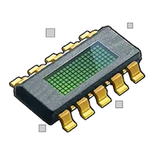
Имплант: Умелый бегун
Имплант для изменения пассивных навыков Пала. При наличии в инвентаре на Операционный стол для Палов становится доступен выбор соответствующего пассивного навыка.
 Имплант: ХладнокровныйЭпический
Имплант: ХладнокровныйЭпический

Имплант: Хладнокровный
Имплант для изменения пассивных навыков Пала. При наличии в инвентаре на Операционный стол для Палов становится доступен выбор соответствующего пассивного навыка.
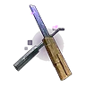
Качественная отмычкаРедкий
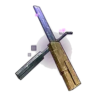
Качественная отмычка
Позволяет вскрывать сундуки с сокровищами, требующие Серебряный ключ. Не ломается при многократном использовании.
Ключ-сфера ГневаЛегендарный
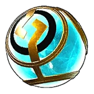
Ключ-сфера Гнева
Артефакт древней цивилизации, некогда процветавшей на этой земле. Его истинная природа до сих пор не установлена, но исследования последних лет указывают на то, что он может быть частью огромного механизма. «Проклятие, отдавшее себя ярости и сеявшее смерть вокруг.»
 Ключ-сфера ГордыниЛегендарный
Ключ-сфера ГордыниЛегендарный
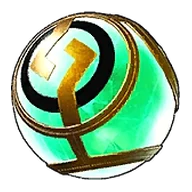
Ключ-сфера Гордыни
Артефакт древней цивилизации, некогда процветавшей на этой земле. Его истинная природа до сих пор не установлена, но исследования последних лет указывают на то, что он может быть частью огромного механизма. «Проклятие, в своей гордыне возжелавшее сосуществования и обрекшее мир на бедствие.»
 Ключ-сфера ЖадностиЛегендарный
Ключ-сфера ЖадностиЛегендарный
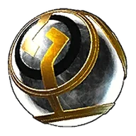
Ключ-сфера Жадности
Артефакт древней цивилизации, некогда процветавшей на этой земле. Его истинная природа до сих пор не установлена, но исследования последних лет указывают на то, что он может быть частью огромного механизма. «Проклятие, отвергшее свою судьбу и возжелавшее уз судьбы.»
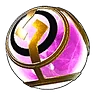
Ключ-сфера ЗавистиЛегендарный
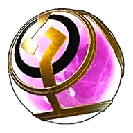
Ключ-сфера Зависти
Артефакт древней цивилизации, некогда процветавшей на этой земле. Его истинная природа до сих пор не установлена, но исследования последних лет указывают на то, что он может быть частью огромного механизма. «Проклятие, принесённое завистью к расцвету человечества и повлёкшее за собой гибель.»
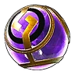
Ключ-сфера ЛениЛегендарный
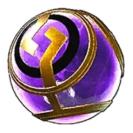
Ключ-сфера Лени
Артефакт древней цивилизации, некогда процветавшей на этой земле. Его истинная природа до сих пор не установлена, но исследования последних лет указывают на то, что он может быть частью огромного механизма. «Проклятие, отвергшее человечность и павшее на путь гибели.»
 Ключ-сфера Первородного грехаЛегендарный
Ключ-сфера Первородного грехаЛегендарный
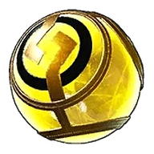
Ключ-сфера Первородного греха
Артефакт древней цивилизации, некогда процветавшей на этой земле. Его истинная природа до сих пор не установлена, но исследования последних лет указывают на то, что он может быть частью огромного механизма. «Проклятие, рождённое из отрицания жизни всего сущего.»
 Ключ-сфера ПохотиЛегендарный
Ключ-сфера ПохотиЛегендарный
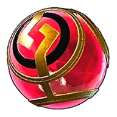
Ключ-сфера Похоти
Артефакт древней цивилизации, некогда процветавшей на этой земле. Его истинная природа до сих пор не установлена, но исследования последних лет указывают на то, что он может быть частью огромного механизма. «Проклятие, возжелавшее внешнего запретного и преступившее законы человеческого мира.»
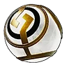
Ключ-сфера ЧревоугодияЛегендарный
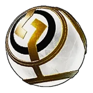
Ключ-сфера Чревоугодия
Артефакт древней цивилизации, некогда процветавшей на этой земле. Его истинная природа до сих пор не установлена, но исследования последних лет указывают на то, что он может быть частью огромного механизма. «Проклятие, пожирающее жизненный поток звезды и не знающее насыщения.»
 Маленькая расширяющаяся сумка
Маленькая расширяющаяся сумка
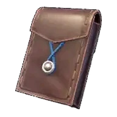
Маленькая расширяющаяся сумка
Маленькая сумка, позволяющая переносить дополнительный груз. При наличии в инвентаре увеличивает количество ячеек. Одной такой сумки вполне достаточно.
 Маленький мешочек с кормом
Маленький мешочек с кормом
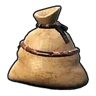
Маленький мешочек с кормом
Маленький мешочек для хранения еды. Разблокирует одну ячейку для автоматического приема пищи. При голоде еда из этой ячейки расходуется автоматически. Одного такого мешочка вполне достаточно.
 Медаль за победу над АзурмейнЛегендарный
Медаль за победу над АзурмейнЛегендарный
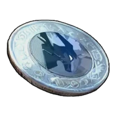
Медаль за победу над Азурмейн
Медаль за победу над Азурмейна, прозванной Скакун лазурного грома. Просто находясь в инвентаре, навсегда увеличивает характеристики ваших Палов. Среднее увеличение грозового урона
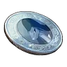
Медаль за победу над АзуробНеобычный
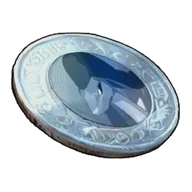
Медаль за победу над Азуроб
Медаль за победу над Азуроба, прозванной Озерная королева. Просто находясь в инвентаре, навсегда увеличивает характеристики ваших Палов. Малое увеличение водного урона
 Медаль за победу над АйдролономЛегендарный
Медаль за победу над АйдролономЛегендарный
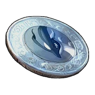
Медаль за победу над Айдролоном
Медаль за победу над Айдролоном, прозванным Крыльями свободы. Просто находясь в инвентаре, навсегда повышает характеристики Палов в команде. Среднее увеличение драконьего урона
 Медаль за победу над АнубисРедкий
Медаль за победу над АнубисРедкий
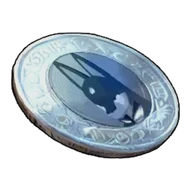
Медаль за победу над Анубис
Медаль за победу над Анубиса, прозванной Хранитель тёмного солнца. Просто находясь в инвентаре, навсегда увеличивает характеристики ваших Палов. Малое увеличение земного урона
 Медаль за победу над Арсоксом
Медаль за победу над Арсоксом
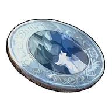
Медаль за победу над Арсоксом
Медаль за победу над Арсоксом, прозванный Пылающим рогатым зверем. Просто находясь в инвентаре, навсегда повышает характеристики Палов в команде. Малое увеличение огненного урона
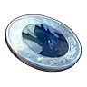
Медаль за победу над АстегонРедкий
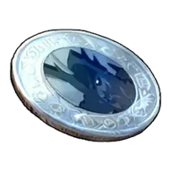
Медаль за победу над Астегон
Медаль за победу над Астегоном, прозванной Стальным Драконим Владыкой. Просто находясь в инвентаре, навсегда увеличивает характеристики ваших Палов. Среднее увеличение драконьего урона
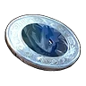
Медаль за победу над АэгидрономЛегендарный
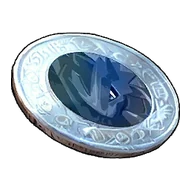
Медаль за победу над Аэгидроном
Медаль за победу над Аэгидроном, прозванный Дракон-хранитель световых следов. Просто находясь в инвентаре, навсегда повышает характеристики Палов в команде. Большое увеличение драконьего урона
 Медаль за победу над БлазамутРедкий
Медаль за победу над БлазамутРедкий
Медаль за победу над Блазамут
Медаль за победу над Блазамута, прозванной Деспот Чистилища. Просто находясь в инвентаре, навсегда увеличивает характеристики ваших Палов. Большое увеличение огненного урона
 Медаль за победу над БлейзхауломНеобычный
Медаль за победу над БлейзхауломНеобычный
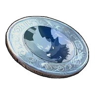
Медаль за победу над Блейзхаулом
Медаль за победу над Блейзхаулом, прозванный Повелителем огненных всполохов. Просто находясь в инвентаре, навсегда повышает характеристики Палов в команде. Малое увеличение огненного урона
Медаль за победу над Брончерри
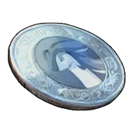
Медаль за победу над Брончерри
Медаль за победу над Брончерри, прозванной Ветер, вестник весны. Просто находясь в инвентаре, навсегда увеличивает характеристики ваших Палов. Малое увеличение травяного урона
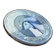
Медаль за победу над Брончерри АкваРедкий
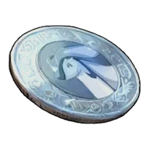
Медаль за победу над Брончерри Аква
Медаль за победу над Брончерри Аква, прозванной Прибой, вестник лета. Просто находясь в инвентаре, навсегда увеличивает характеристики ваших Палов. Малое увеличение водного урона
 Медаль за победу над Буси
Медаль за победу над Буси
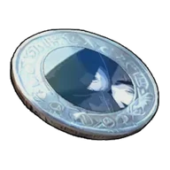
Медаль за победу над Буси
Медаль за победу над Буси, прозванной Странствующий воин. Просто находясь в инвентаре, навсегда увеличивает характеристики ваших Палов. Среднее увеличение огненного урона
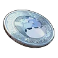
Медаль за победу над Валаска ИгнисЛегендарный
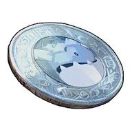
Медаль за победу над Валаска Игнис
Медаль за победу над Валаской Игнис, прозванной Добродушное красное копьё. Просто находясь в инвентаре, навсегда увеличивает характеристики ваших Палов. Большое увеличение огненного урона
 Медаль за победу над ВаласкойРедкий
Медаль за победу над ВаласкойРедкий
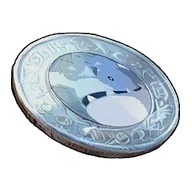
Медаль за победу над Валаской
Медаль за победу над Валаской, прозванной Добродушное ледяное копьё. При наличии навсегда повышает характеристики находящихся с вами Палов. Большое увеличение ледяного урона
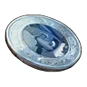
Медаль за победу над Ваэлет
Медаль за победу над Ваэлет
Медаль за победу над Ваэлета, прозванной Фиалковый морок. Просто находясь в инвентаре, навсегда увеличивает характеристики ваших Палов. Среднее увеличение травяного урона
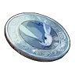
Медаль за победу над ВердашНеобычный
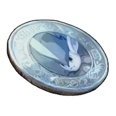
Медаль за победу над Вердаш
Медаль за победу над Вердаша, прозванной Лесной вихрь. Просто находясь в инвентаре, навсегда увеличивает характеристики ваших Палов. Малое увеличение травяного урона
 Медаль за победу над ВиксеномНеобычный
Медаль за победу над ВиксеномНеобычный
Медаль за победу над Виксеном
Медаль за победу над Виксен, прозванным Огненным лисом-магом. Просто находясь в инвентаре, навсегда повышает характеристики Палов в команде. Малое увеличение огненного урона
Медаль за победу над ВистеллойЛегендарный
Медаль за победу над Вистеллой
Медаль за победу над Вистеллой, прозванной Облачённой в ночное небо. Просто находясь в инвентаре, навсегда повышает характеристики Палов в команде. Среднее увеличение тёмного урона
Медаль за победу над ВорсектРедкий
Медаль за победу над Ворсект
Медаль за победу над Ворсекта, прозванной Воин в тяжёлых доспехах. Просто находясь в инвентаре, навсегда увеличивает характеристики ваших Палов. Малое увеличение земного урона
 Медаль за победу над Ворсект ТерраЛегендарный
Медаль за победу над Ворсект ТерраЛегендарный
Медаль за победу над Ворсект Терра
Медаль за победу над Ворсекта Терра, прозванной Воин в золотых доспехах. Просто находясь в инвентаре, навсегда увеличивает характеристики ваших Палов. Среднее увеличение земного урона
 Медаль за победу над Вумпо БотанНеобычный
Медаль за победу над Вумпо БотанНеобычный
Медаль за победу над Вумпо Ботан
Медаль за победу над Вумпо Ботана, прозванной Гигант из южных краёв. Просто находясь в инвентаре, навсегда увеличивает характеристики ваших Палов. Малое увеличение травяного урона
 Медаль за победу над ГилдейнЭпический
Медаль за победу над ГилдейнЭпический
Медаль за победу над Гилдейн
Медаль за победу над Гилдейна, прозванной Зверь-хранитель сумерек. Просто находясь в инвентаре, навсегда увеличивает характеристики ваших Палов. Среднее увеличение земного урона
Медаль за победу над ГриззболтомНеобычный
Медаль за победу над Гриззболтом
Медаль за победу над Гриззболтом, прозванным Громовыми когтями. Просто находясь в инвентаре, навсегда повышает характеристики Палов в команде. Среднее увеличение грозового урона
 Медаль за победу над Гринтэйл
Медаль за победу над Гринтэйл
Медаль за победу над Гринтэйл
Медаль за победу над Гринтэйла, прозванной Типом тела: маршмеллоу. Просто находясь в инвентаре, навсегда увеличивает характеристики ваших Палов. Малое увеличение нейтрального урона
 Медаль за победу над Гумосс
Медаль за победу над Гумосс
Медаль за победу над Гумосс
Медаль за победу над Гумосса, прозванной Неожиданная мутация. Просто находясь в инвентаре, навсегда увеличивает характеристики ваших Палов. Малое увеличение земного урона
Медаль за победу над Даззи НоктЭпический
Медаль за победу над Даззи Нокт
Медаль за победу над Даззи Нокта, прозванной Дитя чёрного облака. Просто находясь в инвентаре, навсегда увеличивает характеристики ваших Палов. Малое увеличение тёмного урона
Медаль за победу над ДжетрагонЛегендарный
Медаль за победу над Джетрагон
Медаль за победу над Джетрагона, прозванной Легендарный метеоритный дракон. Просто находясь в инвентаре, навсегда увеличивает характеристики ваших Палов. Большое увеличение драконьего урона
Медаль за победу над ДинамоффомЛегендарный
Медаль за победу над Динамоффом
Медаль за победу над Динамоффом, прозванный Искрящимся пушистиком. Просто находясь в инвентаре, навсегда повышает характеристики Палов в команде. Малое увеличение грозового урона
Медаль за победу над Диноссум ЛаксРедкий
Медаль за победу над Диноссум Лакс
Медаль за победу над Диноссума Лакс, прозванной Дракон-хранитель молнии. Просто находясь в инвентаре, навсегда увеличивает характеристики ваших Палов. Малое увеличение грозового урона
Медаль за победу над ДуалитРедкий
Медаль за победу над Дуалит
Медаль за победу над Дуалитом, прозванным Дуалистом синей жилы. Просто находясь в инвентаре, навсегда повышает характеристики Палов в команде. Среднее увеличение травяного урона
Медаль за победу над Дуалит НоктЛегендарный
Медаль за победу над Дуалит Нокт
Медаль за победу над Дуалит Ноктом, прозванным Дуалистом фиолетовой жилы. Просто находясь в инвентаре, навсегда повышает характеристики Палов в команде. Среднее увеличение тёмного урона
Медаль за победу над Думад
Медаль за победу над Думад
Медаль за победу над Думада, прозванной Начну с понедельника. Просто находясь в инвентаре, навсегда увеличивает характеристики ваших Палов. Малое увеличение земного урона
 Медаль за победу над ЙормунтайдРедкий
Медаль за победу над ЙормунтайдРедкий
Медаль за победу над Йормунтайд
Медаль за победу над Йормунтайда, прозванной Властелин морей. Просто находясь в инвентаре, навсегда увеличивает характеристики ваших Палов. Среднее увеличение водного урона
 Медаль за победу над Каприти Нокт
Медаль за победу над Каприти Нокт
Медаль за победу над Каприти Нокт
Медаль за победу над Каприти Нокта, прозванной Тёмная ферма. Просто находясь в инвентаре, навсегда увеличивает характеристики ваших Палов. Среднее увеличение травяного урона
Медаль за победу над КатрессНеобычный
Медаль за победу над Катресс
Медаль за победу над Катресса, прозванной Тёмный кот-маг. Просто находясь в инвентаре, навсегда увеличивает характеристики ваших Палов. Малое увеличение тёмного урона
Медаль за победу над Кингпака
Медаль за победу над Кингпака
Медаль за победу над Кингпаки, прозванной Повелитель мохнатых. Просто находясь в инвентаре, навсегда увеличивает характеристики ваших Палов. Малое увеличение нейтрального урона
Медаль за победу над Кингпака КристНеобычный
Медаль за победу над Кингпака Крист
Медаль за победу над Кингпаки Крист, прозванной Повелитель синих мохнатых. Просто находясь в инвентаре, навсегда увеличивает характеристики ваших Палов. Среднее увеличение ледяного урона
Медаль за победу над Кицун НоктЛегендарный
Медаль за победу над Кицун Нокт
Медаль за победу над Кицуна Нокт, прозванной Хранитель тёмного пламени. Просто находясь в инвентаре, навсегда увеличивает характеристики ваших Палов. Малое увеличение тёмного урона
Медаль за победу над Криолинкс ТерраЭпический
Медаль за победу над Криолинкс Терра
Медаль за победу над Криолинкса Терра, прозванной Хищник земли. Просто находясь в инвентаре, навсегда увеличивает характеристики ваших Палов. Среднее увеличение земного урона
 Медаль за победу над ЛилинРедкий
Медаль за победу над ЛилинРедкий
Медаль за победу над Лилин
Медаль за победу над Лилин, прозванной Императрицей лилий. Просто находясь в инвентаре, навсегда повышает характеристики Палов в команде. Большое увеличение травяного урона
 Медаль за победу над Лилин НоктРедкий
Медаль за победу над Лилин НоктРедкий
Медаль за победу над Лилин Нокт
Медаль за победу над Лилин Нокт, прозванной Императрица Бездны. Просто находясь в инвентаре, навсегда увеличивает характеристики ваших Палов. Малое увеличение тёмного урона
Медаль за победу над ЛунарисНеобычный
Медаль за победу над Лунарис
Медаль за победу над Лунариса, прозванной Пришелец из космоса. Просто находясь в инвентаре, навсегда увеличивает характеристики ваших Палов. Малое увеличение нейтрального урона
Медаль за победу над Лупмун КристЛегендарный
Медаль за победу над Лупмун Крист
Медаль за победу над Лупмуна Крист, прозванной Мерцающий в ледяном лунном свете. Просто находясь в инвентаре, навсегда увеличивает характеристики ваших Палов. Большое увеличение ледяного урона
 Медаль за победу над МамморестНеобычный
Медаль за победу над МамморестНеобычный
Медаль за победу над Мамморест
Медаль за победу над Маммореста, прозванной Неистовые бивни. Просто находясь в инвентаре, навсегда увеличивает характеристики ваших Палов. Среднее увеличение травяного урона
Медаль за победу над МенастингНеобычный
Медаль за победу над Менастинг
Медаль за победу над Менастинга, прозванной Всепронзающее копьё. Просто находясь в инвентаре, навсегда увеличивает характеристики ваших Палов. Малое увеличение тёмного урона
 Медаль за победу над Менастинг ТерраРедкий
Медаль за победу над Менастинг ТерраРедкий
Медаль за победу над Менастинг Терра
Медаль за победу над Менастинга Терра, прозванной Копьё, пронзающее золото. Просто находясь в инвентаре, навсегда увеличивает характеристики ваших Палов. Малое увеличение земного урона
Медаль за победу над МикораЛегендарный
Медаль за победу над Микора
Медаль за победу над Микорой, прозванной Милым грибом. Просто находясь в инвентаре, навсегда повышает характеристики Палов в команде. Малое увеличение травяного урона
Медаль за победу над Молдрон КристЛегендарный
Медаль за победу над Молдрон Крист
Медаль за победу над Молдрон Крист, прозванным Ступающим по ледяной земле. Просто находясь в инвентаре, навсегда повышает характеристики Палов в команде. Среднее увеличение ледяного урона
 Медаль за победу над МолдрономЛегендарный
Медаль за победу над МолдрономЛегендарный
Медаль за победу над Молдроном
Медаль за победу над Молдроном, прозванный Ступающей по выжженной земле. Просто находясь в инвентаре, навсегда повышает характеристики Палов в команде. Малое увеличение огненного урона
Медаль за победу над Моссанда ЛаксНеобычный
Медаль за победу над Моссанда Лакс
Медаль за победу над Моссанды Лакс, прозванной Чудак, поражённый молнией. Просто находясь в инвентаре, навсегда увеличивает характеристики ваших Палов. Малое увеличение грозового урона
Медаль за победу над Найтвинг
Медаль за победу над Найтвинг
Медаль за победу над Найтвинга, прозванной Крылья, рассекающие небеса. Просто находясь в инвентаре, навсегда увеличивает характеристики ваших Палов. Малое увеличение нейтрального урона
Медаль за победу над НайтмериЭпический
Медаль за победу над Найтмери
Медаль за победу над Найтмери, прозванной Душа тёмного зайца. Просто находясь в инвентаре, навсегда увеличивает характеристики ваших Палов. Малое увеличение тёмного урона
 Медаль за победу над НептилусЭпический
Медаль за победу над НептилусЭпический
Медаль за победу над Нептилус
Медаль за победу над Нептилиусом, прозванной Легендарное морское чудище. Просто находясь в инвентаре, навсегда увеличивает характеристики ваших Палов. Большое увеличение водного урона
Медаль за победу над НидолломНеобычный
Медаль за победу над Нидоллом
Медаль за победу над Нидолл, прозванный Приветствием тысячью игл. Просто находясь в инвентаре, навсегда повышает характеристики Палов в команде. Малое увеличение травяного урона
 Медаль за победу над НяфияЭпический
Медаль за победу над НяфияЭпический
Медаль за победу над Няфия
Медаль за победу над Няфии, прозванной Охотник ночных теней. Просто находясь в инвентаре, навсегда увеличивает характеристики ваших Палов. Малое увеличение тёмного урона
 Медаль за победу над ОмаскулЭпический
Медаль за победу над ОмаскулЭпический
Медаль за победу над Омаскул
Медаль за победу над Омаскула, прозванной Столикий апостол. Просто находясь в инвентаре, навсегда увеличивает характеристики ваших Палов. Малое увеличение тёмного урона
 Медаль за победу над ОфидиейЛегендарный
Медаль за победу над ОфидиейЛегендарный
Медаль за победу над Офидией
Медаль за победу над Офидией, прозванной Невинным драконом водяных цветов. Просто находясь в инвентаре, навсегда повышает характеристики Палов в команде. Среднее увеличение водного урона
 Медаль за победу над ПаладиусЭпический
Медаль за победу над ПаладиусЭпический
Медаль за победу над Паладиус
Медаль за победу над Двумя рыцарями. Просто находясь в инвентаре, навсегда увеличивает характеристики ваших Палов. Большое увеличение нейтрального урона Малое увеличение тёмного урона
 Медаль за победу над Пенкинг
Медаль за победу над Пенкинг
Медаль за победу над Пенкинг
Медаль за победу над Пенкинга, прозванной Первопроходец ледяного моря. Просто находясь в инвентаре, навсегда увеличивает характеристики ваших Палов. Малое увеличение водного урона
Медаль за победу над ПеталлияНеобычный
Медаль за победу над Петаллия
Медаль за победу над Петаллии, прозванной Леди цветочного сада. Просто находясь в инвентаре, навсегда увеличивает характеристики ваших Палов. Малое увеличение травяного урона
 Медаль за победу над ПиринНеобычный
Медаль за победу над ПиринНеобычный
Медаль за победу над Пирин
Медаль за победу над Пирин, прозванным Быстроногим скакуном раскалённых песков. Просто находясь в инвентаре, навсегда повышает характеристики Палов в команде. Малое увеличение огненного урона
Медаль за победу над Пиродон КристЭпический
Медаль за победу над Пиродон Крист
Медаль за победу над Пиродон Крист, прозванным Ходячей ледяной жилой. Просто находясь в инвентаре, навсегда повышает характеристики Палов в команде. Среднее увеличение ледяного урона
 Медаль за победу над ПиродономРедкий
Медаль за победу над ПиродономРедкий
Медаль за победу над Пиродоном
Медаль за победу над Пиродоном, прозванным Ходячей рудной жилой. Просто находясь в инвентаре, навсегда повышает характеристики Палов в команде. Среднее увеличение земного урона
Медаль за победу над ПрунелияЭпический
Медаль за победу над Прунелия
Медаль за победу над Прунелии, прозванной Прислужница Индиго. Просто находясь в инвентаре, навсегда увеличивает характеристики ваших Палов. Среднее увеличение травяного урона
 Медаль за победу над РайбердНеобычный
Медаль за победу над РайбердНеобычный
Медаль за победу над Райберд
Медаль за победу над Райберда, прозванной Крылья грома. Просто находясь в инвентаре, навсегда увеличивает характеристики ваших Палов. Малое увеличение грозового урона
Медаль за победу над Релаксаурус ЛаксЭпический
Медаль за победу над Релаксаурус Лакс
Медаль за победу над Релаксауруса Лакс, прозванной Громовой дракон-обжора. Просто находясь в инвентаре, навсегда увеличивает характеристики ваших Палов. Малое увеличение драконьего урона
Медаль за победу над РептироРедкий
Медаль за победу над Рептиро
Медаль за победу над Рептиро, прозванным Пожирателем лавы. Просто находясь в инвентаре, навсегда повышает характеристики Палов в команде. Малое увеличение земного урона
Медаль за победу над Риббани БотанРедкий
Медаль за победу над Риббани Ботан
Медаль за победу над Риббани Ботана, прозванной Сияющая улыбка. Просто находясь в инвентаре, навсегда увеличивает характеристики ваших Палов. Среднее увеличение травяного урона
Медаль за победу над РэндзишиЛегендарный
Медаль за победу над Рэндзиши
Медаль за победу над Рэндзиши, прозванным Срывающим аплодисменты. Просто находясь в инвентаре, навсегда повышает характеристики Палов в команде. Среднее увеличение огненного урона
Медаль за победу над Свипа
Медаль за победу над Свипа
Медаль за победу над Свипа, прозванной Загадочный король лохматиков. Просто находясь в инвентаре, навсегда увеличивает характеристики ваших Палов. Малое увеличение ледяного урона
 Медаль за победу над СелесдирЛегендарный
Медаль за победу над СелесдирЛегендарный
Медаль за победу над Селесдир
Медаль за победу над Селесдира, прозванной Зверь-спаситель. Просто находясь в инвентаре, навсегда увеличивает характеристики ваших Палов. Среднее увеличение нейтрального урона
 Медаль за победу над Селесдир НоктЛегендарный
Медаль за победу над Селесдир НоктЛегендарный
Медаль за победу над Селесдир Нокт
Медаль за победу над Селесдир Нокт, прозванным Зверем хаоса. Просто находясь в инвентаре, навсегда повышает характеристики Палов в команде. Среднее увеличение тёмного урона
 Медаль за победу над СибеликсНеобычный
Медаль за победу над СибеликсНеобычный
Медаль за победу над Сибеликс
Медаль за победу над Сибеликса, прозванной Белоснежная леди. Просто находясь в инвентаре, навсегда увеличивает характеристики ваших Палов. Малое увеличение ледяного урона
 Медаль за победу над СилвегисЭпический
Медаль за победу над СилвегисЭпический
Медаль за победу над Силвегис
Медаль за победу над Силвегиса, прозванной Стальной дракон-хранитель. Просто находясь в инвентаре, навсегда увеличивает характеристики ваших Палов. Среднее увеличение драконьего урона
 Медаль за победу над Скорпио ЛаксЛегендарный
Медаль за победу над Скорпио ЛаксЛегендарный
Медаль за победу над Скорпио Лакс
Медаль за победу над Скорпио Лакс, прозванным Громовым мальчиком. Просто находясь в инвентаре, навсегда повышает характеристики Палов в команде. Малое увеличение грозового урона
 Медаль за победу над СлоуваттомЛегендарный
Медаль за победу над СлоуваттомЛегендарный
Медаль за победу над Слоуваттом
Медаль за победу над Слоуваттом, прозванным Электризующим флегматиком. Просто находясь в инвентаре, навсегда повышает характеристики Палов в команде. Малое увеличение грозового урона
Медаль за победу над СмокиЭпический
Медаль за победу над Смоки
Медаль за победу над Смоки, прозванной Маленький тёмный герой. Просто находясь в инвентаре, навсегда увеличивает характеристики ваших Палов. Малое увеличение тёмного урона
Медаль за победу над СнокомЛегендарный
Медаль за победу над Сноком
Медаль за победу над Сноком, прозванным Тихоходом синего тока. Просто находясь в инвентаре, навсегда повышает характеристики Палов в команде. Малое увеличение грозового урона
 Медаль за победу над СплаттеринаЛегендарный
Медаль за победу над СплаттеринаЛегендарный
Медаль за победу над Сплаттерина
Медаль за победу над Сплаттерины, прозванной Кровавый расчленитель. Просто находясь в инвентаре, навсегда увеличивает характеристики ваших Палов. Малое увеличение тёмного урона
Медаль за победу над СтаррионЭпический
Медаль за победу над Старрион
Медаль за победу над Старриона, прозванной Лазурная грива. Просто находясь в инвентаре, навсегда увеличивает характеристики ваших Палов. Малое увеличение тёмного урона
 Медаль за победу над СудзакуНеобычный
Медаль за победу над СудзакуНеобычный
Медаль за победу над Судзаку
Медаль за победу над Судзаку, прозванной Алый хозяин небес. Просто находясь в инвентаре, навсегда увеличивает характеристики ваших Палов. Большое увеличение огненного урона
Медаль за победу над ТарантриссНеобычный
Медаль за победу над Тарантрисс
Медаль за победу над Тарантрисса, прозванной Хитроумный прядильщик. Просто находясь в инвентаре, навсегда увеличивает характеристики ваших Палов. Малое увеличение тёмного урона
 Медаль за победу над ТеранайтРедкий
Медаль за победу над ТеранайтРедкий
Медаль за победу над Теранайт
Медаль за победу над Теранайта, прозванной Гигантский ходячий доспех. Просто находясь в инвентаре, навсегда увеличивает характеристики ваших Палов. Малое увеличение земного урона
Медаль за победу над ТетроисРедкий
Медаль за победу над Тетроис
Медаль за победу над Тетроис, прозванным Гигантская скала Песчаного моря. Просто находясь в инвентаре, навсегда повышает характеристики Палов в команде. Малое увеличение земного урона
 Медаль за победу над Тетроис ПримоЭпический
Медаль за победу над Тетроис ПримоЭпический
Медаль за победу над Тетроис Примо
Медаль за победу над Тетроис Примо, прозванный Скала-хранитель Песчаного моря. Просто находясь в инвентаре, навсегда увеличивает характеристики ваших Палов. Среднее увеличение нейтрального урона
Медаль за победу над Фалерис АкваЛегендарный
Медаль за победу над Фалерис Аква
Медаль за победу над Фалериса Аква, прозванной Владыка Небесных Вод. Просто находясь в инвентаре, навсегда увеличивает характеристики ваших Палов. Среднее увеличение водного урона
Медаль за победу над ФелбэтНеобычный
Медаль за победу над Фелбэт
Медаль за победу над Фелбэта, прозванной Сумеречный вампир. Просто находясь в инвентаре, навсегда увеличивает характеристики ваших Палов. Малое увеличение тёмного урона
Медаль за победу над Фенглоп
Медаль за победу над Фенглоп
Медаль за победу над Фенглопа, прозванной Дрейфующее облако. Просто находясь в инвентаре, навсегда увеличивает характеристики ваших Палов. Малое увеличение нейтрального урона
Медаль за победу над Фенглоп ЛаксЭпический
Медаль за победу над Фенглоп Лакс
Медаль за победу над Фенглопа Лакс, прозванной Шальная молния. Просто находясь в инвентаре, навсегда увеличивает характеристики ваших Палов. Среднее увеличение грозового урона
 Медаль за победу над ФларакломЛегендарный
Медаль за победу над ФларакломЛегендарный
Медаль за победу над Флараклом
Медаль за победу над Флараклом, прозванным Хитрым предсказателем. Просто находясь в инвентаре, навсегда повышает характеристики Палов в команде. Среднее увеличение огненного урона
Медаль за победу над Фоксайклом
Медаль за победу над Фоксайклом
Медаль за победу над Фоксайкл, прозванной Леденящей ледяной лисицей. Просто находясь в инвентаре, навсегда повышает характеристики Палов в команде. Малое увеличение ледяного урона
Медаль за победу над Фокспаркс Крист
Медаль за победу над Фокспаркс Крист
Медаль за победу над Фокспаркса Крист, прозванной Ледяной цветок пути. Просто находясь в инвентаре, навсегда увеличивает характеристики ваших Палов. Большое увеличение ледяного урона
Медаль за победу над ФросталлионЭпический
Медаль за победу над Фросталлион
Медаль за победу над Фросталлиона, прозванной Легендарный ледяной Пегас. Просто находясь в инвентаре, навсегда увеличивает характеристики ваших Палов. Большое увеличение ледяного урона
Медаль за победу над Фросталлион НоктЛегендарный
Медаль за победу над Фросталлион Нокт
Медаль за победу над Фросталлиона Нокт, прозванной Легендарный тёмный Пегас. Просто находясь в инвентаре, навсегда увеличивает характеристики ваших Палов. Малое увеличение тёмного урона
 Медаль за победу над ФэскиРедкий
Медаль за победу над ФэскиРедкий
Медаль за победу над Фэски
Медаль за победу над Фэски, прозванной Белоснежный странник небес. Просто находясь в инвентаре, навсегда увеличивает характеристики ваших Палов. Малое увеличение драконьего урона
 Медаль за победу над Чиллет
Медаль за победу над Чиллет
Медаль за победу над Чиллет
Медаль за победу над Чиллета, прозванной Танцор равнин. Просто находясь в инвентаре, навсегда увеличивает характеристики ваших Палов. Малое увеличение ледяного урона
Медаль за победу над ЭлизабиНеобычный
Медаль за победу над Элизаби
Медаль за победу над Элизаби, прозванной Королева улья. Просто находясь в инвентаре, навсегда увеличивает характеристики ваших Палов. Малое увеличение травяного урона
Медаль за победу над ЭлфидранНеобычный
Медаль за победу над Элфидран
Медаль за победу над Элфидрана, прозванной Добродушный небесный дракон. Просто находясь в инвентаре, навсегда увеличивает характеристики ваших Палов. Малое увеличение драконьего урона
 Медаль за победу над ЮнивольтНеобычный
Медаль за победу над ЮнивольтНеобычный
Медаль за победу над Юнивольт
Медаль за победу над Юнивольта, прозванной Стремительный вихрь. Просто находясь в инвентаре, навсегда увеличивает характеристики ваших Палов. Малое увеличение грозового урона
 Миниган ГриззболтаРедкий
Миниган ГриззболтаРедкий
Миниган Гриззболта
Если находится в инвентаре, позволяет оседлать пала «Гриззболт» и вести непрерывный огонь из минигана.
Мистическая шкатулка для аксессуаровЭпический
Мистическая шкатулка для аксессуаров
Мистическая шкатулка, внутреннее содержимое которой синхронизируется с телом владельца. Добавляет один слот для аксессуаров. Одной такой шкатулки вполне достаточно.
 Молот БастигораЛегендарный
Молот БастигораЛегендарный
Молот Бастигора
Если находится в инвентаре, позволяет оседлать пала «Бастигор».
 Набор для строительства на водеЭпический
Набор для строительства на водеЭпический
Набор для строительства на воде
Инструмент для строительства на воде. Позволяет устанавливать фундамент прямо на поверхности воды.
Огромная расширяющаяся сумкаЭпический
Огромная расширяющаяся сумка
Огромная сумка, позволяющая переносить дополнительный груз. При наличии в инвентаре увеличивает количество ячеек. Одной такой сумки вполне достаточно.
 Огромный мешочек с кормомЭпический
Огромный мешочек с кормомЭпический
Огромный мешочек с кормом
Вместительный мешочек для хранения еды. Разблокирует четыре ячейки для автоматического приема пищи. При голоде еда из этих ячеек расходуется автоматически. Одного такого мешочка вполне достаточно.
Ошейник ДаззиНеобычный
Ошейник Даззи
Ошейник Даззи. При наличии в инвентаре и если Даззи состоит в команде Палов, он автоматически появляется и поддерживает атаки игрока.
Ошейник Даззи НоктаНеобычный
Ошейник Даззи Нокта
Ошейник Даззи Нокт. При наличии в инвентаре и если Даззи Нокт состоит в команде Палов, он автоматически появляется и поддерживает атаки игрока.
Ошейник Даэдрима
Ошейник Даэдрима
Ошейник Даэдрим. При наличии в инвентаре и если Даэдрим состоит в команде Палов, он автоматически появляется и поддерживает атаки игрока.
Ошейник Флопи
Ошейник Флопи
Ошейник Флопи. При наличии в инвентаре и если Флопи состоит в команде Палов, он автоматически появляется и собирает предметы вокруг.
Перчатки Джолтхог Криста
Перчатки Джолтхог Криста
Теплоизолирующие перчатки для обращения с палом «Джолтхог Крист». После активации навыка спутника Джолтхог Крист используется как замораживающая граната.
Перчатки Джолтхога
Перчатки Джолтхога
Резиновые перчатки, позволяющие брать в руки Джолтхог. После активации навыка спутника Джолтхог используется как электрошоковая граната, которую можно метнуть во врага.
Перчатки Килламари
Перчатки Килламари
Если предмет находится в инвентаре, а Килламари состоит в команде Палов, характеристики глайдера улучшаются.
Перчатки Килламари Примо
Перчатки Килламари Примо
Если предмет находится в инвентаре, а Килламари Примо состоит в команде Палов, характеристики глайдера улучшаются.
Перчатки Селарай
Перчатки Селарай
Если предмет находится в инвентаре, а Селарай состоит в команде Палов, характеристики глайдера улучшаются.
Перчатки Селарай Лакс
Перчатки Селарай Лакс
Если предмет находится в инвентаре, а Селарай Лакс состоит в команде Палов, характеристики глайдера улучшаются.
Перчатки Токотоко
Перчатки Токотоко
Перчатки, позволяющие бережно удерживать пала «Токотоко». При активации навыка спутника Токотоко прижимается к игроку и атакует врагов, выпуская взрывающиеся яйца.
Перчатки Хангю
Перчатки Хангю
Если предмет находится в инвентаре, а Хангю состоит в команде Палов, характеристики глайдера улучшаются.
Перчатки Хангю Криста
Перчатки Хангю Криста
Если предмет находится в инвентаре, а Хангю Крист состоит в команде Палов, характеристики глайдера улучшаются.
Перчатки ЭрмургаНеобычный
Перчатки Эрмурга
Если предмет находится в инвентаре, а Эрмург состоит в команде Палов, характеристики глайдера улучшаются.
 Пистолет-пулемёт Лифманка
Пистолет-пулемёт Лифманка
Пистолет-пулемёт Лифманка
Небольшой пистолет-пулемёт, предназначенный для пала «Лифманк». При активации навыка спутника Лифманк садится на голову игрока и открывает дополнительный огонь, поддерживая его атаки.
Поясной фонарьНеобычный
Поясной фонарь
Фонарь для ношения на поясе. Автоматически включается, когда наступает ночь. Можно изменить режим, чтобы он светил постоянно. Одного такого фонаря вполне достаточно.
 Простая отмычкаНеобычный
Простая отмычкаНеобычный
Простая отмычка
Позволяет вскрывать сундуки с сокровищами, требующие Бронзовый ключ. Не ломается при многократном использовании.
 Профессиональная отмычкаЭпический
Профессиональная отмычкаЭпический
Профессиональная отмычка
Позволяет вскрывать сундуки с сокровищами, требующие Золотой ключ. Не ломается при многократном использовании.
Ракетная установка ДжетрагонаЛегендарный
Ракетная установка Джетрагона
Если находится в инвентаре, позволяет оседлать пала «Джетрагон» и вести непрерывный ракетный обстрел.
Ракетная установка Релаксаурус ЛаксаЭпический
Ракетная установка Релаксаурус Лакса
Если находится в инвентаре, позволяет оседлать пала «Релаксаурус Лакс» и вести непрерывный ракетный обстрел.
Ракетная установка РелаксаурусаЭпический
Ракетная установка Релаксауруса
Если находится в инвентаре, позволяет оседлать пала «Релаксаурус» и вести непрерывный ракетный обстрел.
Ракетомёт Пенгуллет Лакс
Ракетомёт Пенгуллет Лакс
Пусковая установка для стрельбы Палами Пенгуллет Лакс. После активации навыка спутника запускает Пенгуллет Лакс во врага в качестве снаряда. При этом Пенгуллет Лакс оказывается при смерти.
Ракетомёт Пенгуллета
Ракетомёт Пенгуллета
Пусковая установка для стрельбы Пенгуллет. При активации навыка спутника запускает Пенгуллет во врага в качестве снаряда. При этом Пенгуллет оказывается при смерти.
 Резонирующая кость БризаЛегендарный
Резонирующая кость БризаЛегендарный
Резонирующая кость Бриза
Обломок кости, в котором ощущается таинственная сила. Если прислушаться, можно едва уловить звук — тихий шум морского ветра.
 Резонирующая кость Морской ПеныЛегендарный
Резонирующая кость Морской ПеныЛегендарный
Резонирующая кость Морской Пены
Обломок кости, в котором ощущается таинственная сила. Если прислушаться, можно едва уловить звук — шелест морской пены.
Резонирующая кость ПрибояЛегендарный
Резонирующая кость Прибоя
Обломок кости, в котором ощущается таинственная сила. Если прислушаться, можно едва уловить звук — мягкий, повторяющийся шум волн.
 Резонирующая кость ТишиныЛегендарный
Резонирующая кость ТишиныЛегендарный
Резонирующая кость Тишины
Обломок кости, в котором ощущается таинственная сила. Если прислушаться, можно едва уловить звук — звук некогда пережитой тишины.
Седло АзурмейнаЭпический
Седло Азурмейна
Если находится в инвентаре, позволяет оседлать пала «Азурмейн».
Седло Азуроб КристНеобычный
Седло Азуроб Крист
Если находится в инвентаре, позволяет оседлать пала «Азуроб Крист».
Седло АзуробаНеобычный
Седло Азуроба
Если находится в инвентаре, позволяет оседлать пала «Азуроб».
Седло АйдролонЛегендарный
Седло Айдролон
Если находится в инвентаре, позволяет оседлать пала «Айдролон».
Седло Айдролон ИгнисаЛегендарный
Седло Айдролон Игниса
Если находится в инвентаре, позволяет оседлать пала «Айдролон Игнис».
 Седло Арсокса
Седло Арсокса

Седло Арсокса
Если находится в инвентаре, позволяет оседлать пала «Арсокс».
 Седло АстегонаРедкий
Седло АстегонаРедкий

Седло Астегона
Если находится в инвентаре, позволяет оседлать пала «Астегон».
 Седло АэгидронаЛегендарный
Седло АэгидронаЛегендарный
Седло Аэгидрона
Если находится в инвентаре, позволяет оседлать пала «Аэгидрон».
Седло Блазамут РюЛегендарный
Седло Блазамут Рю
Если находится в инвентаре, позволяет оседлать пала «Блазамут Рю».
Седло БлазамутаЛегендарный
Седло Блазамута
Если находится в инвентаре, позволяет оседлать пала «Блазамут».
Седло Блейзхаул НоктаНеобычный
Седло Блейзхаул Нокта
Если находится в инвентаре, позволяет оседлать пала «Блейзхаул Нокт».
Седло БлейзхаулаНеобычный
Седло Блейзхаула
Если находится в инвентаре, позволяет оседлать пала «Блейзхаул».
Седло БралохаРедкий
Седло Бралоха
Если находится в инвентаре, позволяет оседлать пала «Бралоха».
Седло БрончерриРедкий
Седло Брончерри
Если находится в инвентаре, позволяет оседлать пала «Брончерри».
Седло Брончерри АкваРедкий
Седло Брончерри Аква
Если находится в инвентаре, позволяет оседлать пала «Брончерри Аква».
Седло БуллдосаЭпический
Седло Буллдоса
Если находится в инвентаре, позволяет оседлать пала «Буллдос».
Седло ВаласкаРедкий
Седло Валаска
Если находится в инвентаре, позволяет оседлать пала «Валаска».
Седло Валаска ИгнисРедкий
Седло Валаска Игнис
Если находится в инвентаре, позволяет оседлать пала «Валаска Игнис».
Седло Ванвирм Криста
Седло Ванвирм Криста
Если находится в инвентаре, позволяет оседлать пала «Ванвирм Крист».
Седло Ванвирма
Седло Ванвирма
Если находится в инвентаре, позволяет оседлать пала «Ванвирм».
Седло ВумпоЭпический
Седло Вумпо
Если находится в инвентаре, позволяет оседлать пала «Вумпо».
Седло Вумпо БотанаЭпический
Седло Вумпо Ботана
Если находится в инвентаре, позволяет оседлать пала «Вумпо Ботан».
Седло ГанглерНеобычный
Седло Ганглер
Если находится в инвентаре, позволяет оседлать пала «Ганглер».
Седло Ганглер ИгнисНеобычный
Седло Ганглер Игнис
Если находится в инвентаре, позволяет оседлать пала «Ганглер Игнис».
Седло ГилдейнаЭпический
Седло Гилдейна
Если находится в инвентаре, позволяет оседлать пала «Гилдейн».
Седло Гринтэйла
Седло Гринтэйла
Если находится в инвентаре, позволяет оседлать пала «Гринтэйл».
Седло ДаземуНеобычный
Седло Дазему
Если находится в инвентаре, позволяет оседлать пала «Дазему».
Седло ДинамоффаЛегендарный
Седло Динамоффа
Если находится в инвентаре, позволяет оседлать пала «Динамофф».
Седло Диноссум ЛаксаНеобычный
Седло Диноссум Лакса
Если находится в инвентаре, позволяет оседлать пала «Диноссум Лакс».
Седло ДиноссумаНеобычный
Седло Диноссума
Если находится в инвентаре, позволяет оседлать пала «Диноссум».
Седло Дуалит НоктаЭпический
Седло Дуалит Нокта
Если находится в инвентаре, позволяет оседлать пала «Дуалит Нокт» и выпускать мощный лазер тёмного элемента.
Седло ДуалитаЭпический
Седло Дуалита
Если находится в инвентаре, позволяет оседлать пала «Дуалит» и выпускать мощный лазер травяного элемента.
Седло ЗеногардаРедкий
Седло Зеногарда
Если находится в инвентаре, позволяет оседлать пала «Зеногард».
Седло ЗенолордаЛегендарный
Седло Зенолорда
Если находится в инвентаре, позволяет оседлать пала «Зенолорд».
Седло Иктирдира
Седло Иктирдира
Если находится в инвентаре, позволяет оседлать пала «Иктирдир».
Седло Иктирдира Тэрра
Седло Иктирдира Тэрра
Если находится в инвентаре, позволяет оседлать пала «Иктирдир Тэрра».
Седло ЙормунтайдаЛегендарный
Седло Йормунтайда
Если находится в инвентаре, позволяет оседлать пала «Йормунтайд».
Седло Йормунтайда ИгнисЛегендарный
Седло Йормунтайда Игнис
Если находится в инвентаре, позволяет оседлать пала «Йормунтайд Игнис».
Седло КингпакаНеобычный
Седло Кингпака
Если находится в инвентаре, позволяет оседлать пала «Кингпака».
Седло Кингпака КристНеобычный
Седло Кингпака Крист
Если находится в инвентаре, позволяет оседлать пала «Кингпака Крист».
Седло КицунЭпический
Седло Кицун
Если находится в инвентаре, позволяет оседлать пала «Кицун».
Седло Кицун НоктаЭпический
Седло Кицун Нокта
Если находится в инвентаре, позволяет оседлать пала «Кицун Нокт».
Седло Мамморест КристаНеобычный
Седло Мамморест Криста
Если находится в инвентаре, позволяет оседлать пала «Мамморест Крист».
Седло МамморестаНеобычный
Седло Маммореста
Если находится в инвентаре, позволяет оседлать пала «Мамморест».
Седло МараитаРедкий
Седло Мараита
Если находится в инвентаре, позволяет оседлать пала «Мараит».
Седло Мелпаки
Седло Мелпаки
Если находится в инвентаре, позволяет оседлать пала «Мелпака».
Седло Молдрон КристаРедкий
Седло Молдрон Криста
Если находится в инвентаре, позволяет оседлать пала «Молдрон Крист».
Седло МолдронаРедкий
Седло Молдрона
Если находится в инвентаре, позволяет оседлать пала «Молдрон».
Седло Найтвинга
Седло Найтвинга
Если находится в инвентаре, позволяет оседлать пала «Найтвинг».
Седло НекромусаЛегендарный
Седло Некромуса
Если находится в инвентаре, позволяет оседлать пала «Некромус».
Седло НептилусЛегендарный
Седло Нептилус
Если находится в инвентаре, позволяет оседлать пала «Нептилиус».
Седло ОфидииЛегендарный
Седло Офидии
Если находится в инвентаре, позволяет оседлать пала «Офидия».
Седло ПаладиусаЛегендарный
Седло Паладиуса
Если находится в инвентаре, позволяет оседлать пала «Паладиус».
Седло ПалумбаРедкий
Седло Палумба
Если находится в инвентаре, позволяет оседлать пала «Палумба».
Седло ПиринНеобычный
Седло Пирин
Если находится в инвентаре, позволяет оседлать пала «Пирин».
Седло Пирин НоктаНеобычный
Седло Пирин Нокта
Если находится в инвентаре, позволяет оседлать пала «Пирин Нокт».
Седло ПолапапНеобычный
Седло Полапап
Если находится в инвентаре, позволяет оседлать пала «Полапап».
Седло Полапап ТерраЭпический
Седло Полапап Терра
Если находится в инвентаре, позволяет оседлать пала «Полапап Терра».
Седло РагнахавкаНеобычный
Седло Рагнахавка
Если находится в инвентаре, позволяет оседлать пала «Рагнахавк».
Седло Райберд КристаНеобычный
Седло Райберд Криста
Если находится в инвентаре, позволяет оседлать пала «Райберд Крист».
Седло РайбердаНеобычный
Седло Райберда
Если находится в инвентаре, позволяет оседлать пала «Райберд».
Седло Райхаунд КристаНеобычный
Седло Райхаунд Криста
Если находится в инвентаре, позволяет оседлать пала «Райхаунд Крист».
Седло РайхаундаНеобычный
Седло Райхаунда
Если находится в инвентаре, позволяет оседлать пала «Райхаунд».
Седло Рашоа
Седло Рашоа
Если находится в инвентаре, позволяет оседлать пала «Рашоа».
Седло РейндриксаНеобычный
Седло Рейндрикса
Если находится в инвентаре, позволяет оседлать пала «Рейндрикс».
Седло РептироРедкий
Седло Рептиро
Если находится в инвентаре, позволяет оседлать пала «Рептиро».
Седло Рептиро КристРедкий
Седло Рептиро Крист
Если находится в инвентаре, позволяет оседлать пала «Рептиро Крист».
Седло РоуджейЛегендарный
Седло Роуджей
Если находится в инвентаре, позволяет оседлать пала «Роуджей».
Седло Свипы
Седло Свипы
Если находится в инвентаре, позволяет оседлать пала «Свипа».
Седло СеленыЭпический
Седло Селены
Если находится в инвентаре, позволяет оседлать пала «Селена».
Седло Селесдир НоктаЛегендарный
Седло Селесдир Нокта
Если находится в инвентаре, позволяет оседлать пала «Селесдир Нокт».
Седло СелесдираЛегендарный
Седло Селесдира
Если находится в инвентаре, позволяет оседлать пала «Селесдир».
Седло Серфент Терра
Седло Серфент Терра
Если находится в инвентаре, позволяет оседлать пала «Серфент Терра».
Седло Серфента
Седло Серфента
Если находится в инвентаре, позволяет оседлать пала «Серфент».
Седло СилвегисаЭпический
Седло Силвегиса
Если находится в инвентаре, позволяет оседлать пала «Силвегис».
Седло СолмораЛегендарный
Седло Солмора
Если находится в инвентаре, позволяет оседлать пала «Солмора».
Седло Солмора ЛаксаЛегендарный
Седло Солмора Лакса
Если находится в инвентаре, позволяет оседлать пала «Солмора Лакс».
Седло Старрион ПримоЭпический
Седло Старрион Примо
Если находится в инвентаре, позволяет оседлать пала «Старрион Примо».
Седло СтаррионаЭпический
Седло Старриона
Если находится в инвентаре, позволяет оседлать пала «Старрион».
Седло СудзакуРедкий
Седло Судзаку
Если находится в инвентаре, позволяет оседлать пала «Судзаку».
Седло Судзаку АкваРедкий
Седло Судзаку Аква
Если находится в инвентаре, позволяет оседлать пала «Судзаку Аква».
Седло Тарантрисса
Седло Тарантрисса
Если находится в инвентаре, позволяет оседлать пала «Тарантрисс».
Седло ТетроисаЭпический
Седло Тетроиса
Если находится в инвентаре, позволяет оседлать пала «Тетроис».
Седло Тетроиса ПримоЭпический
Седло Тетроиса Примо
Если находится в инвентаре, позволяет оседлать пала «Тетроис Примо».
Седло Фалерис АкваЭпический
Седло Фалерис Аква
Если находится в инвентаре, позволяет оседлать пала «Фалерис Аква».
Седло ФалерисаЭпический
Седло Фалериса
Если находится в инвентаре, позволяет оседлать пала «Фалерис».
Седло Фенглоп ЛаксаНеобычный
Седло Фенглоп Лакса
Если находится в инвентаре, позволяет оседлать пала «Фенглоп Лакс».
Седло ФенглопаНеобычный
Седло Фенглопа
Если находится в инвентаре, позволяет оседлать пала «Фенглоп».
Седло Фросталлион НоктаЛегендарный
Седло Фросталлион Нокта
Если находится в инвентаре, позволяет оседлать пала «Фросталлион Нокт».
Седло ФросталлионаЛегендарный
Седло Фросталлиона
Если находится в инвентаре, позволяет оседлать пала «Фросталлион».
Седло ФэскиРедкий
Седло Фэски
Если находится в инвентаре, позволяет оседлать пала «Фэски».
Седло Фэски БотанаРедкий
Седло Фэски Ботана
Если находится в инвентаре, позволяет оседлать пала «Фэски Ботан».
Седло ХарталисЛегендарный
Седло Харталис
Позволяет создавать барьер, защищающий от атак, во время езды верхом на пале «Харталис».
Седло Хэлзефир ЛаксаНеобычный
Седло Хэлзефир Лакса
Если находится в инвентаре, позволяет оседлать пала «Хэлзефир Лакс».
Седло ХэлзефираНеобычный
Седло Хэлзефира
Если находится в инвентаре, позволяет оседлать пала «Хэлзефир».
Седло Чиллет Игниса
Седло Чиллет Игниса
Если находится в инвентаре, позволяет оседлать пала «Чиллет Игнис».
Седло Чиллета
Седло Чиллета
Если находится в инвентаре, позволяет оседлать пала «Чиллет».
Седло ШаолонгаЛегендарный
Седло Шаолонга
Если находится в инвентаре, позволяет оседлать пала «Шаолонг».
Седло Шрумер НоктаРедкий
Седло Шрумер Нокта
Если находится в инвентаре, позволяет оседлать пала «Шрумер Нокт».
Седло ШрумераРедкий
Седло Шрумера
Если находится в инвентаре, позволяет оседлать пала «Шрумер».
Седло ШэдоубикаЭпический
Седло Шэдоубика
Если находится в инвентаре, позволяет оседлать пала «Шэдоубик».
Седло Элфидран Аква
Седло Элфидран Аква
Если находится в инвентаре, позволяет оседлать пала «Элфидран Аква».
Седло Элфидрана
Седло Элфидрана
Если находится в инвентаре, позволяет оседлать пала «Элфидран».
Седло Юнивольт Криста
Седло Юнивольт Криста
Если находится в инвентаре, позволяет оседлать пала «Юнивольт Крист».
Седло Юнивольта
Седло Юнивольта
Если находится в инвентаре, позволяет оседлать пала «Юнивольт».
Седло ЯкумоРедкий
Седло Якумо
Если находится в инвентаре, позволяет оседлать пала «Якумо».
Средний мешочек с кормомНеобычный
Средний мешочек с кормом
Средний мешочек для хранения еды. Разблокирует две ячейки для автоматического приема пищи. При голоде еда из этих ячеек расходуется автоматически. Одного такого мешочка вполне достаточно.
 Средняя расширяющаяся сумкаНеобычный
Средняя расширяющаяся сумкаНеобычный
Средняя расширяющаяся сумка
Вместительная сумка, позволяющая переносить дополнительный груз. При наличии в инвентаре увеличивает количество ячеек. Одной такой сумки вполне достаточно.
 Статуя ДепрессоРедкий
Статуя ДепрессоРедкий
Статуя Депрессо
Таинственная статуя Пала, встречающаяся по всему острову Палпагос. Используется у особой статуи для усиления игрока.
Статуя КаттиваРедкий
Статуя Каттива
Таинственная статуя Пала, встречающаяся по всему острову Палпагос. Используется у особой статуи для усиления игрока.
 Статуя ЛамболлаРедкий
Статуя ЛамболлаРедкий
Статуя Ламболла
Таинственная статуя Пала, встречающаяся по всему острову Палпагос. Используется у особой статуи для усиления игрока.
 Статуя ЛифманкаРедкий
Статуя ЛифманкаРедкий
Статуя Лифманка
Загадочные статуи Палов, встречающиеся по всему острову Палпагос. Подношение у особой статуи позволяет усилить игрока.
Статуя ЛунарисаЭпический
Статуя Лунариса
Таинственная статуя Пала, встречающаяся по всему острову Палпагос. Используется у особой статуи для усиления игрока.
Статуя МанчиллаРедкий
Статуя Манчилла
Таинственная статуя Пала, встречающаяся по всему острову Палпагос. Используется у особой статуи для усиления игрока.
Статуя МимидогаЭпический
Статуя Мимидога
Таинственная статуя Пала, иногда получаемая при поимке множества Палов. Используется у особой статуи для усиления игрока.
Статуя ПенгуллетаРедкий
Статуя Пенгуллета
Таинственная статуя Пала, встречающаяся по всему острову Палпагос. Используется у особой статуи для усиления игрока.
 Статуя РелаксаурусаЭпический
Статуя РелаксаурусаЭпический
Статуя Релаксауруса
Таинственная статуя Пала, встречающаяся по всему острову Палпагос. Используется у особой статуи для усиления игрока.
 Статуя РубиРедкий
Статуя РубиРедкий
Статуя Руби
Таинственная статуя Пала, встречающаяся по всему острову Палпагос. Используется у особой статуи для усиления игрока.
 Статуя ТанзиРедкий
Статуя ТанзиРедкий
Статуя Танзи
Таинственная статуя Пала, встречающаяся по всему острову Палпагос. Используется у особой статуи для усиления игрока.
 Статуя ХербилаРедкий
Статуя ХербилаРедкий
Статуя Хербила
Таинственная статуя Пала, встречающаяся по всему острову Палпагос. Используется у особой статуи для усиления игрока.
 Статуя ЯкумоЭпический
Статуя ЯкумоЭпический
Статуя Якумо
Таинственная статуя Пала, встречающаяся по всему острову Палпагос. Используется у особой статуи для усиления игрока.
 Таинственная шкатулка для аксессуаровЛегендарный
Таинственная шкатулка для аксессуаровЛегендарный
Таинственная шкатулка для аксессуаров
Мистическая шкатулка, внутреннее содержимое которой синхронизируется с телом владельца. Добавляет один дополнительный слот для аксессуаров. Одной такой шкатулки вполне достаточно.
Улучшенный поясной фонарьРедкий
Улучшенный поясной фонарь
Фонарь для ношения на поясе, освещающий широкую область. Автоматически включается, когда наступает ночь. Можно изменить режим, чтобы он светил постоянно. Одного такого фонаря вполне достаточно.
Флейта ЭхаЛегендарный
Флейта Эха
Скелетная флейта, восстановленная по прочитанному и расшифрованному истёртому чертежу. Чистый, пронизывающий звук, будто звучащий бесконечно, пробудит… Легендарного владыку морей, охраняющего клятву.
Шлейка СмокиЭпический
Шлейка Смоки
Шлейка Смоки. При активации навыка спутника позволяет обнаруживать поблизости залежи Хромаит.
Шлейка Фокспаркс Криста
Шлейка Фокспаркс Криста
Шлейка для переноски Фокспаркс Крист. При активации навыка спутника Фокспаркс Крист оказывается у игрока на руках и атакует, испуская холод.
Шлейка Фокспаркса
Шлейка Фокспаркса
Шлейка, позволяющая взять на руки Фокспаркс. При активации навыка спутника Фокспаркс можно взять его на руки и атаковать как огнемётом.
Шлейка ХербилНеобычный
Шлейка Хербил
Шлейка для пала «Хербил». Если находится в инвентаре, Хербил воскрешает игрока с помощью целительной силы, когда тот оказывается при смерти.
Шлейка с седлом для Дайэхаула
Шлейка с седлом для Дайэхаула
Если находится в инвентаре, позволяет оседлать пала «Дайэхаул».
Штурмовая винтовка Танзи
Штурмовая винтовка Танзи
Компактная штурмовая винтовка для пала «Танзи». При активации навыка спутника Танзи переходит в режим стрельбы и начинает обстреливать всех врагов поблизости.
Штурмовая винтовка Танзи Игнис
Штурмовая винтовка Танзи Игнис
Компактная штурмовая винтовка для пала «Танзи Игнис». При активации навыка спутника Танзи Игнис переходит в режим стрельбы и начинает обстреливать всех врагов поблизости.